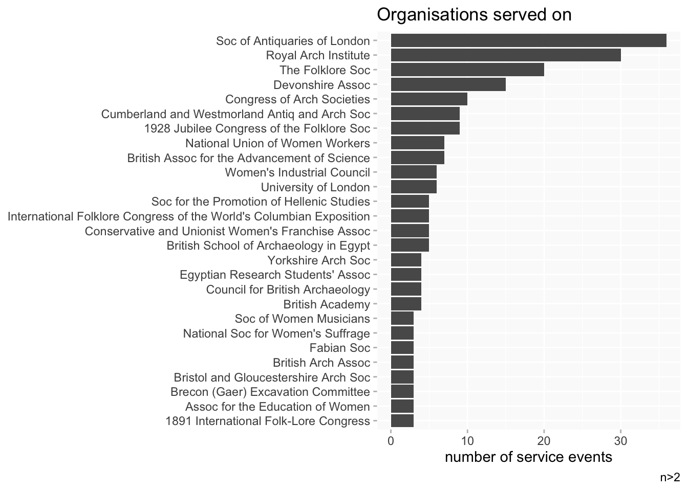
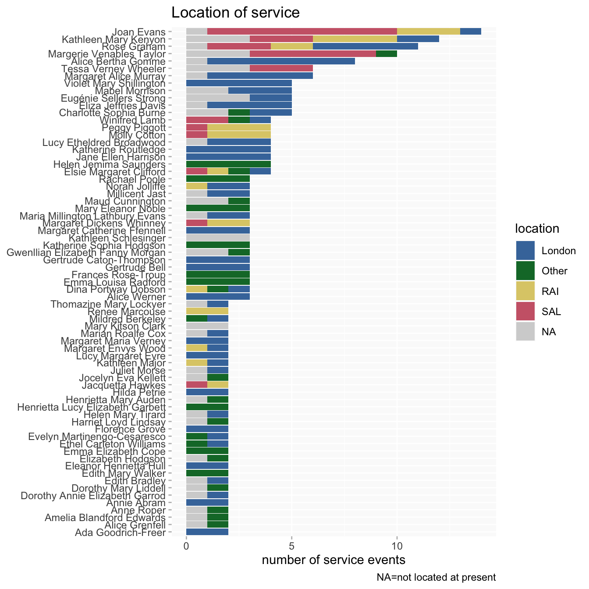
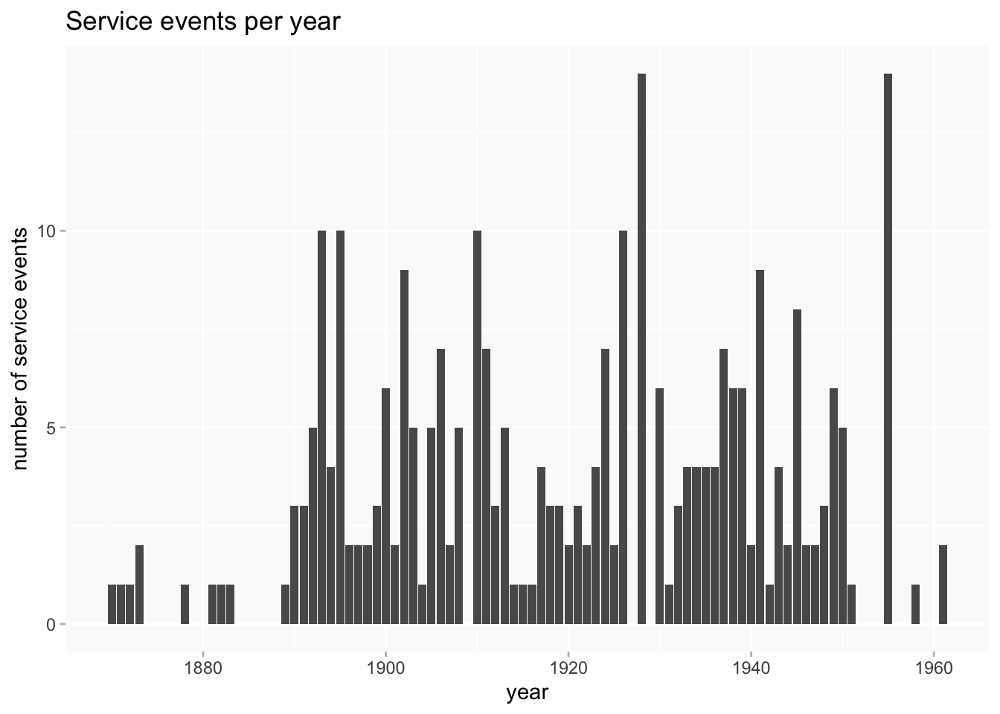
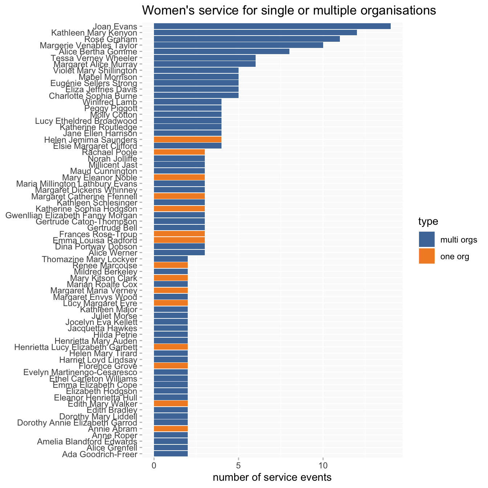
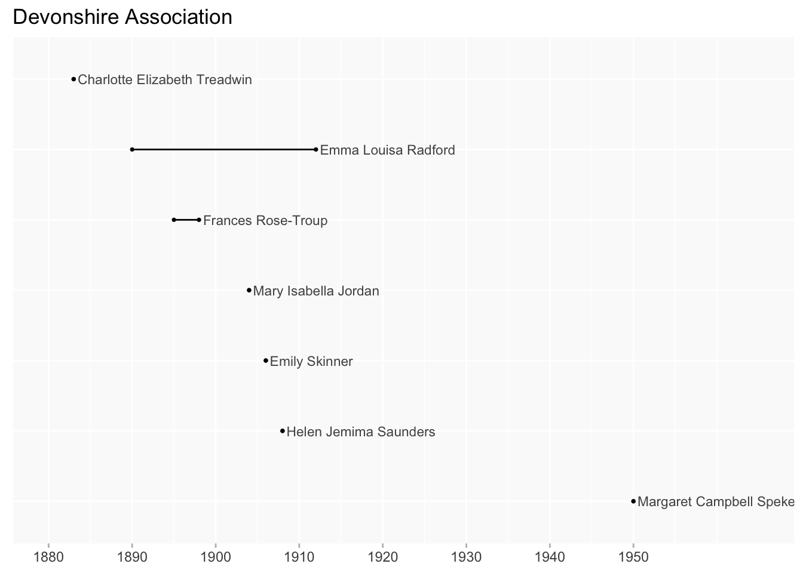

Women serving on committees
ppa
Thinking about the
served on property
This has taken a while to come together and is still WIP.
served onisn’t a must-have property and isn’t necessarily recorded comprehensively (except for some specific SAL/RAI sources(?)), which may limit what can usefully or meaningfully be done with it- there are a lot of organisations, many with a very small number of service events (and some with very long names which are not ideal for labels in visualisations)
- the structure of the data can have slight variations; eg, most statements have an
ofproperty with a named organisation, but for a few that info needs to be got frompart ofinstead
I’m still thinking about the best ways to handle these issues, as they’ll recur with other PPAs when I go beyond SAL/RAI.
A “service event” = a discrete statement in the served on property for each woman, which usually has at least a type of service (generic committee, Council, specific sub-committee, etc), organisation name and date.
Todo
- I have more work to do generally on locations; what’s here is just a starting point.
Wikibase query
Organisations
There are about 70 different organisations, more than half of which are represented by a single service event.
Type of service

Location
(Work on locations is very WIP)

This time SAL/RAI are highlighted separately from other London organisations.

Dates
This is a) not very interesting and b) probably misleading, but I’m leaving it in for info. It combines two different types of date, point in time and start time. The majority of dates are point in time, and it’s unclear to me in this case to what extent that represents actual short term service or just an artefact of the sources (would much committee service be more long term activity).

Duration of service
Although likely still problematic, this seems a more interesting use of the dates data. (Only includes women whose dates span more than 1 year.)

Sorting by longest service will tend to privilege the earliest starters, so this is the same thing ordered by earliest date.
Breadth of service
Women with five or more service events all served on multiple organisations; but there’s no obvious pattern for those with fewer than five.

[Don’t think this quite works.]

Cohorts?
As with college attendance, it might be interesting to see where women might have been working together (bearing in mind the caveats about dates and that the date ranges take no account of gaps in service).
